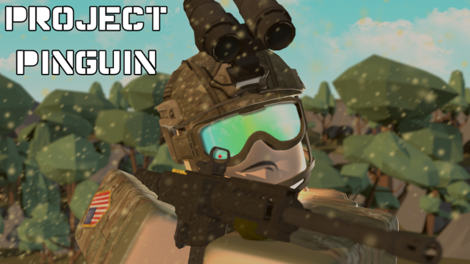
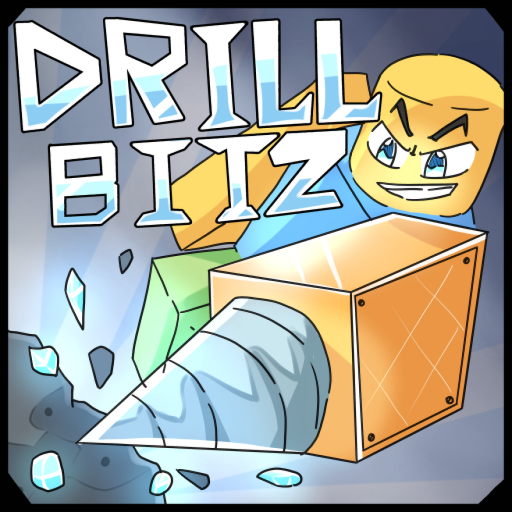

Project Pinguin was the first FPS game we made! It was poorly made, with nice maps. We had a good 6 developers at this time, and weren't producing enough funds, causing us to lay off a ton of employees and be left with a good 3 or so. This was before we met bubbybumble and ErikOst3. This game had very well made maps, pretty bad scripting, and a few free models, but it was our first game. Since then, I've learned to create accurate gun systems, use less scripts, and use WAY more effecient code.


The idea for this game wasn't ours actually, this was around the time we met bubbybumble, we played his game and really liked it. We wanted to purchase one of his games, a game called Drill Under (The) Ground or DUG. This game was very well known by a small youtubers community, it has 57.8K visits. We were going to pay 10k Robux for this game, which gave us the rights to all assets in the game, besides animations. We were at first going to build upon what he had, but after some discussing we decided to make our own. We had officially hired ErikOst3 at this point, so he was going to lead the development of this new game. I owe much of what I know about OOP to ErikOst3, the guy who taught me the basics of OOP. Our plan was to use Perlin Noise to generate a mountain and then make a system that allowed for users to drill into the terrain. It worked quite well, but we never got to far. In the end, we all slowly gave up and moved on. ErikOst3 was eventually fired due to personal arguments (we're fine now), Eaglesrok1 and I were the last two developers left and we decided to shut down the Studio. Thus came the end of Pinguin Studioz, the first company I've ever owned.
Pinguin Studioz is something I'm very proud of founding. Over the months running it I learned more than I learned in the past 3 years. I'm very happy with how it turned out and cannot wait to create more projects similar to it.